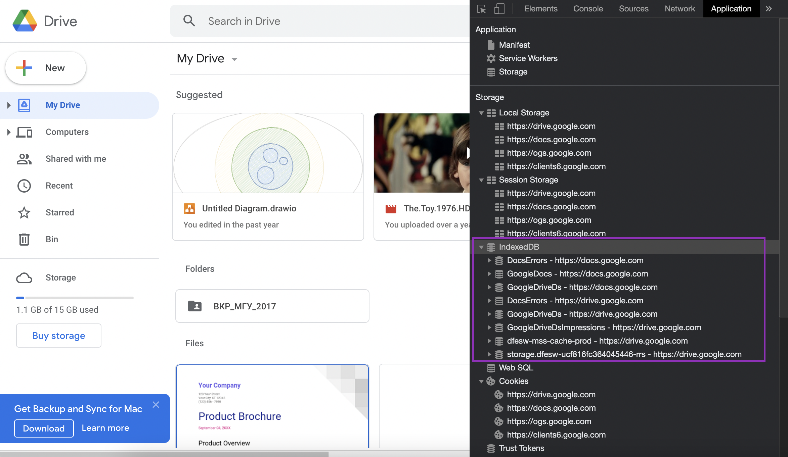
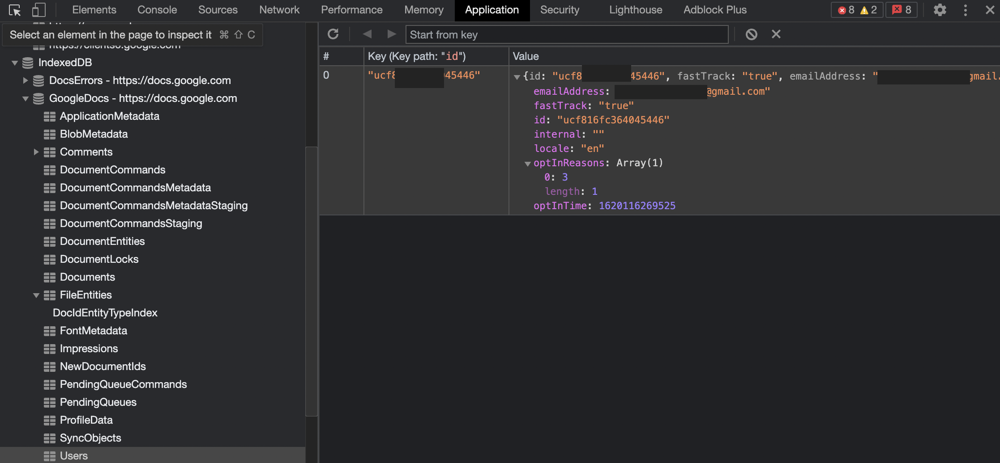
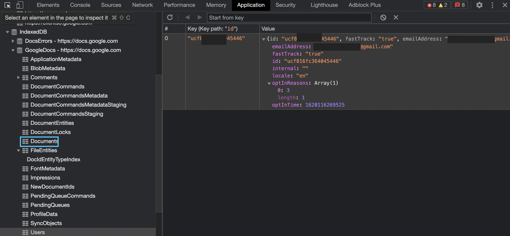

In the process of investigating Toy PD case, I’ve realised I lack the information about different browser files. This is an attempt to fill that gap.
Many browsers are based on Chromium engine, that’s why they will have similar artifacts: Chrome, Opera, new Edge, Brave, Vivaldi.
IndexedDB
Client-side web technology and supporteed by all of the mainstream browsers. Allows storage of structured user data on the client (JavaSctipt objects). Allows caching and storing some data for offline or tracking. The database structure is as follows:
Database:
- Object store (~table)
- Object (~row)
- Object (~row)
- Object (~row)
- Object store (~table)
- Object (~row)
- Object (~row)
- Object (~row)
Objects are addressable by their primary key or any other field that’s specified as index.

On the pictire above I’ve selected this IndexedDB (purple square). It’s more like Elastic of MongoDB (noSQL databases). It looks much more like a dictionary or hashtable to me. For example, Users table contains one single entry: ucf8XXXXXX45446, which has a set of properties like emailAddress, fasttrack, id, internal, locale (language of the GUI, I presume), optInReasons and optInTime. optInReasons, in turn, has it’s own property of type array with only one item with the value 0.

An example of working with such a database [4]:
dbOpenReq.onupgradeneeded = ev => {
document.body.append("db creating/upgrading");
let upgradedb = ev.target.result;
if(!upgradedb.objectStoreNames.contains("objStore1")){
let objectStore = upgradedb.createObjectStore('objStore1', {keyPath:'id', autoIncrement: true});
objectStore.createIndex("indexA", "indexA", {unique: false});
objectStore.createIndex("indexB", "indexB", {unique: false});
}
if(!upgradedb.objectStoreNames.contains("objStore2")){
let objectStore = upgradedb.createObjectStore('objStore2', {keyPath:'id', autoIncrement: true});
objectStore.createIndex("indexC", "indexC", {unique: false});
objectStore.createIndex("indexD", "indexD", {unique: false});
}
}
Storing the data is not complicated either:
var addData = () => {
let transcation = db.transcation(["objStore1", "objStore2"], "readwrite");
let objectStore1 = transcation.objectStore("objStore1");
objectStore1.add({"indexA": "a.1", "indexB": "Some data for indexB"});
objectStore1.add({"indexA": "a.2", "indexB": "Some more data for indexB"});
let objectStore2 = transcation.objectStore("objStore2");
objectStore1.add({"indexC": "c.1", "indexD": "Some data for indexD"});
objectStore1.add({"indexC": "c.2", "indexD": "Some more data for indexD"});
}
When you download a file from GoogleDocs, it’s stored in this IndexedDB -> Documents.

On Windows machine it’s stored here: $USER\AppData\Local\Google\Chrome\User Data\Default\IndexedDB. Contains multiple folders, one for each domain. Usually have the extension leveldb.
levelDB
Firefox
Localstore.rdf
No real value for the examiner here, since it contains customized data on the interface. Can be cleared in the GUI with “Reset toolbars and controls” option. [1]
addons.json
I think, the file name speaks for itself. It contains all the data for installed addons.
References
[1] About Localstore.rdf file
[2] Browser forensics
[3] Working with IndexedDB
[4] Magnet Summit 2021, Hang On! That’s Not SQLite! Chrome, Electron, and LevelDB